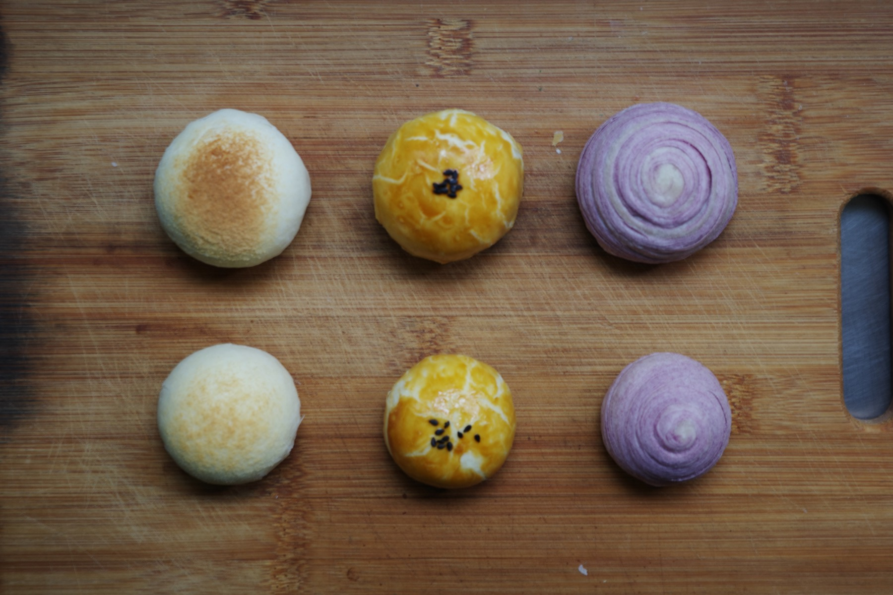
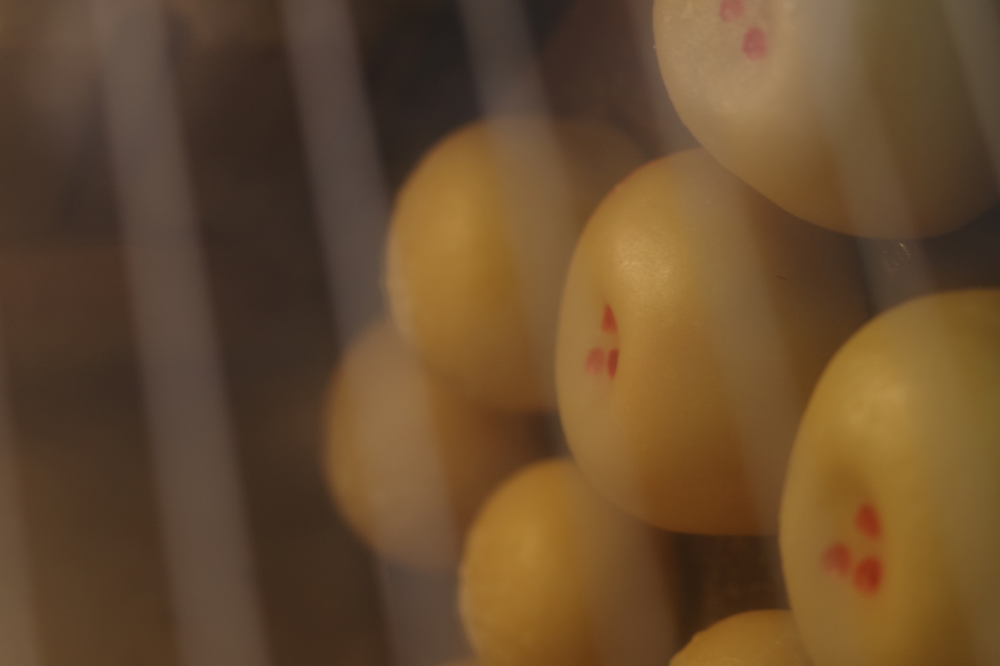

Seasonal Gift
節慶送禮，也可以溫柔而有設計感。
從單顆包裝到整盒配置，讓月餅不只是節日慣例，而是一份被好好準備過的心意。

Gift Ready
明亮焦糖色、品牌貼紙與整齊盒裝，送禮更完整。
月餅頁以禮盒感為核心，保留職人手作的細節，也讓買家一眼感覺到包裝質感。


Seasonal Gift
從單顆包裝到整盒配置，讓月餅不只是節日慣例，而是一份被好好準備過的心意。
Gift Ready
月餅頁以禮盒感為核心，保留職人手作的細節，也讓買家一眼感覺到包裝質感。

